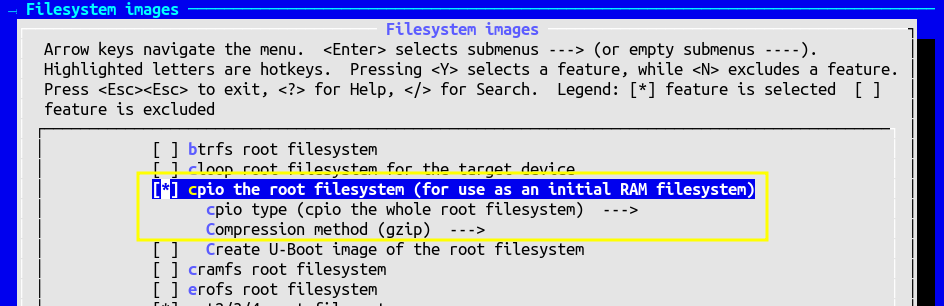
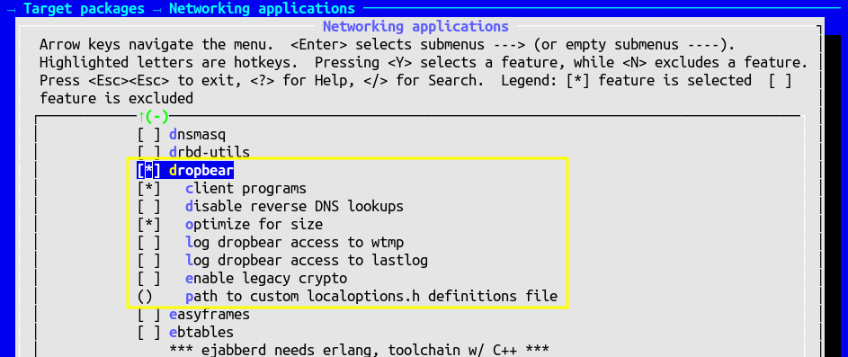
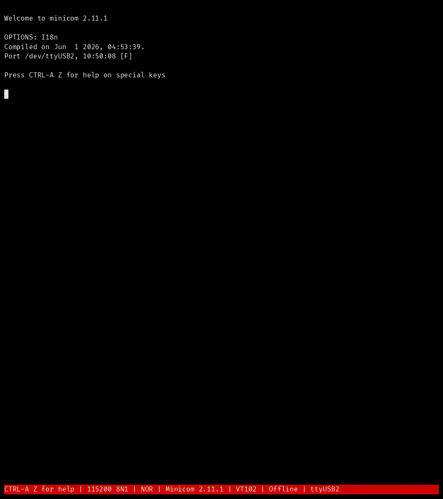

01 - Custom Buildroot Image running on RAM
Introduction
My first goal is to have a working system running from RAM with a fixed IP address and an SSH server.
Building the Buildroot default configuration
As I am using the Raspberry Pi 4 Model B, I will first build the default Raspberry Pi image that comes with Buildroot. For that, I will download Buildroot and choose the default configuration. I recommend taking a look at the Buildroot User Manual so you install the necessary dependencies.
$ wget https://buildroot.org/downloads/buildroot-2026.05.tar.gz
$ tar xf buildroot-2026.05.tar.gz
$ cd buildroot-2026.05
$ make raspberrypi4_64_defconfig
$ make
The first time you run that you take a long time depending on your machine. It took around 1h10min for me.
After that, you end up with an SD card image that you can dd to your SD card
and boot Linux on the RPi.
$ ls -alh output/images
Using a Buildroot external tree
As I want to keep my project separated from the Buildroot tree, we can use the
br2_external mechanism provided by Buildroot - check
here.
To do that, I created the folder structure as follows:
rpi-pxe-nas/
├─ Config.in
├─ board/
│ ├─ rpi-pxe-nas/
│ │ ├─ cmdline.txt
│ │ ├─ config.txt
│ │ ├─ genimage.cfg.in
│ │ ├─ post-image.sh
│ │ ├─ rootfs-overlay/
│ │ │ ├─ etc/
│ │ │ │ ├─ network/
│ │ │ │ │ ├─ interfaces
│ │ │ │ ├─ resolv.conf
├─ configs/
│ ├─ rpi_pxe_nas_defconfig
├─ external.desc
├─ external.mk
├─ buildroot-2026.05/
The files Config.in and external.mk can be left empty for now. The contents
of external.desc will tell Buildroot about your external tree:
$ cat external.desc
name: RPI_PXE_NAS
desc: Raspberry Pi PXE/NAS Server
Our new config configs/rpi_pxe_nas_defconfig, which we will customize to our
project later, is obtained from the default RPi 4 configuration:
$ cp buildroot-2026.05/configs/raspberrypi4_64_defconfig configs/rpi_pxe_nas_defconfig
The board/rpi-pxe-nas folder contains files revelant to the RPi that we will
customize later, like cmdline.txt (kernel command line), config.txt (boot
configuration file), genimage.cfg.in (schema to generate image from) and
post-image.sh (script that runs after image is generated). For now, we just
copy the default ones to our tree:
$ cp buildroot-2026.05/board/raspberrypi4-64/cmdline.txt board/rpi-pxe-nas/cmdline.txt
$ cp buildroot-2026.05/board/raspberrypi4-64/config_4_64bit.txt board/rpi-pxe-nas/config.txt
$ cp buildroot-2026.05/board/raspberrypi4-64/genimage.cfg.in board/rpi-pxe-nas/genimage.cfg.in
$ cp buildroot-2026.05/board/raspberrypi4-64/post-image.sh board/rpi-pxe-nas/post-image.sh
The rootfs-overlay folder, as the name suggests, will contain the files that
we want to add to our rootfs. In this case, I will create a file to set up
fixed IP on the ethernet interface and nameservers:
# /etc/network/interfaces
auto lo
iface lo inet loopback
auto eth0
iface eth0 inet static
address 192.168.1.105
netmask 255.255.255.0
gateway 192.168.1.254
# /etc/resolv.conf
nameserver 1.1.1.1
nameserver 8.8.8.8
Now, in order to build the image, we just need to specify that we are using
external tree. Inside the buildroot-2026.05 folder, we run:
$ make BR2_EXTERNAL=.. rpi_pxe_nas_defconfig
$ make
Use rootfs as init ramdisk
The strategy here will be to build a cpio archive from the rootfs. After that, we can put it in the bootfs and tell the RPi to use it as initrd.
Build rootfs as cpio archive
We need to tell Buildroot to cpio the root filesystem. We can configure that
under Filesystem images -> cpio the root filesystem (for use as an initial RAM filesystem). We will also enable gzip compression as we are here:
make menuconfig

We also need to make sure that the kernel has support for a gzip’d ramdisk, which should be the default in the RPi kernel:
$ grep CONFIG_RD_GZIP output/build/linux-*/.config
CONFIG_RD_GZIP=y
Add cpio archive to bootfs
Now that we can see rootfs.cpio.gz inside output/images/, we need to add it
to the boot partition on our SD card image. To do that, we can simply modify
the genimage.cfg.in template and add it to the boot partition:
image boot.vfat {
vfat {
files = {
#BOOT_FILES#
"rootfs.cpio.gz"
}
}
size = 64M
}
...
Notice that I also increased the partition size from 32M to 64M.
Configure bootfs
To make the cpio archive the actual initrd when booting, we add the initramfs rootfs.cpio.gz followkernel line to config.txt. You can find documentation
here.
As we are modifying it, I will also enable UART so we can access the RPi
through a serial converter:
start_file=start4.elf
fixup_file=fixup4.dat
kernel=Image
disable_overscan=1
arm_64bit=1
# This makes RPi use our cpio archive as initrd
initramfs rootfs.cpio.gz followkernel
# Enable UART0 for serial console on ttyAMA0
dtoverlay=miniuart-bt
We also need to modify the kernel command line and remove the root device:
console=tty1 console=ttyAMA0,115200
Adding an SSH server
For the initial debugging, I will be using a serial adapter. However, I also
want the RPi to be accessible via SSH. To do that, Buildroot can install
dropbear, a small-ish SSH server, to your
image. You can find it under Target packages -> Networking applications -> dropbear.
make menuconfig

Final Result
After building the project, you can dd the generated SD card image to an SD
card and use it on your RPi.
sudo dd if=output/images/sdcard.img of=/dev/sdb bs=4M status=progress; sync
Be careful to select the correct device, as you can permanently damage your own drives with
dd. In my case, the SD card was/dev/sdb.
You can see the image booting below. Running the mount command also shows
that the SD card is not mounted - the system is running on RAM.

Here I will also record some statistics. We will come back to them later.
- Time to login prompt: 3.2 s
- Idle RAM usage: 35.2 MB
- Userspace threads: 7
- Kernel threads: 96